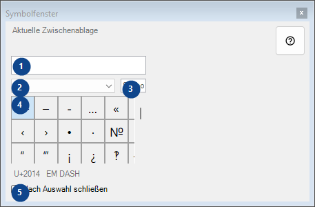
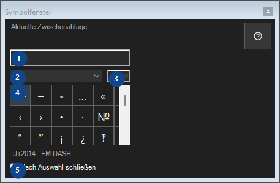

Symbolfenster
Zweck
Palette seltener Zeichen: Ein Klick kopiert das Zeichen in die Zwischenablage; alles bleibt auf diesem Computer.


Reihenfolge
Lesen Sie die nummerierten Erklärungen, wählen Sie die benötigten Werte und fahren Sie mit dem Fensterbefehl fort.
Elemente
1. Aktuelle Zwischenablage
Aktuelle Zwischenablage
Ihre Tastenkürzel2. Zeichensatz
Zeichensatz
Ihre Tastenkürzel3. Symbole suchen
Nach Name, Stichwörtern oder Unicode-Code suchen
Ihre Tastenkürzel4. Symbolraster
U+2014 EM DASH
Ihre Tastenkürzel5. Nach Auswahl schließen
Nach Auswahl schließen
Ihre Tastenkürzel